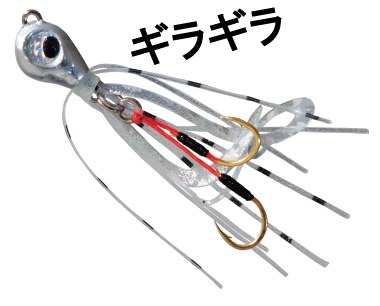
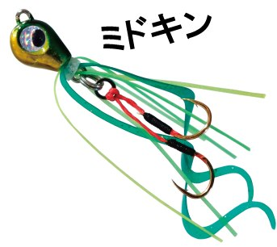
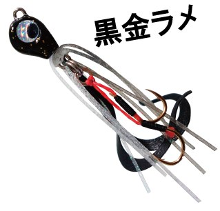
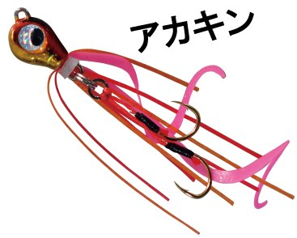

魚子ラバ
魚子ラバはRUDIE'S（ルーディーズ）のマイクロタイラバです。
堤防のあらゆるターゲットが狙える、業界初のマイクロタイラバです。極柔マテリアルのカーリーテールが広範囲に猛烈アピールし、動きを安定させる低重心ヘッドでピンポイントへのアプローチも自由自在。穴釣りやボトムの釣りに最適で、25〜40gのヘビーウエイトも追加され、ミドルゲームにも完全対応しました。

画像出典:RUDIE'S公式HP
スペック
- メーカー
- RUDIE'S（ルーディーズ）
- タイプ
- マイクロタイラバ
- 重さ
- 1.0g〜40g（1.0・1.5・2.0・2.5・3.0・5.0・7.0・10・15・20・25・30・40g）
- 入数
- 1個
- 付属品
- Wアシストフック（ISEAMA #3・ゴールド）
- カラー
- 全8色
- ターゲット
- 堤防のロックフィッシュ・真鯛など、ほぼ全ての魚
- 価格
- 1.0〜3.0g：620円／5.0〜15g：650円／20・25g：680円／30g：780円／40g：880円（税別）
▼今すぐチェック

魚子ラバの特徴
ぶっちぎりの存在感と集魚力で、スレた魚にも口を使わせる
-
極柔シリコンのカーリーテール
シリコン製で極柔のカーリーテールが、イレギュラーで大きなアクションを起こし、広範囲に強烈にアピールする。
-
安定して泳ぐ低重心ヘッド
フォールやリトリーブの時に安定したスイミングを生み出す低重心ヘッド。穴釣りのピンポイントにも落としやすい。
-
バイトポイントになるグローチューブ
ターゲットのバイトポイントになるグローチューブを採用。暗い場所や深場でも目立たせられる。
-
フッキングしやすい段差セッティング
アシストラインは吸い込みバイトに追従する極柔マテリアル。フックは全方位からのバイトに対応できる段差セッティングで、フッキング率も大幅にアップ。
魚子ラバの使い方
穴釣りでは、テトラの隙間などに落として着底させ、小さく上下させたり、ゆっくり巻き上げたりして誘います。
堤防からキャストする時は、ボトムまで沈めてから一定の速度で巻くタイラバの基本で使えます。アタリがあってもすぐに合わせず、巻き続けて重みが乗ってから合わせるのがコツです。
魚子ラバの得意な状況
テトラ帯の穴釣り、堤防の際やボトムでカサゴ・ソイ・ハタなどのロックフィッシュを狙う状況が得意です。
重いサイズは、真鯛やフラットフィッシュ、青物なども狙える堤防のミドルゲームに使えます。
ワンポイント
軽いサイズ（1.0〜3.0g）はライトタックルでの穴釣りや足元の探り、5.0〜20gは堤防からのキャスト、25〜40gは深場や潮の速い場所のミドルゲーム向けと考えると選びやすいです。
サイズの使い分け
| 重さ | 価格（税別） | 使い分け |
|---|---|---|
| 1.0g〜3.0g | 620円 | ライトタックルでの穴釣り・足元の探り |
| 5.0g〜15g | 650円 | 堤防からのキャスト・ボトムの釣り |
| 20g・25g | 680円 | 深めのポイント・ミドルゲーム |
| 30g | 780円 | 潮の速い場所・深場のミドルゲーム |
| 40g | 880円 | より深い場所・遠投が必要な時 |
※重さ・価格は公式ページより（使い分けは目安）。UVピンクグロー・UVオレンジグローは3.0g以上の展開です。
オススメカラー
魚子ラバは全8色。そのうち4色を紹介します。

ギラギラシルバー系のフラッシングカラー。小魚を食べている時に。

ミドキングリーン×金のカラー。澄んだ水や日中に。

黒金ラメ黒金のシルエット強調カラー。濁りやローライトに。

アカキン赤金のタイラバ定番カラー。まず使いたい色。
画像出典:RUDIE'S公式HP
魚子ラバに似ているルアー
-
 魚子メタル
RUDIE'S
詳細はこちら＞
魚子メタル
RUDIE'S
詳細はこちら＞
同じ魚子シリーズのスーパーライトジグ。フォールで食わせたい時に。
-
 ハタ喰い・鵺
RUDIE'S
詳細はこちら＞
ハタ喰い・鵺
RUDIE'S
詳細はこちら＞
ラバー付きの根魚ワーム。ボトムシェイクでハタを狙う時に。
-
 ハタ喰い・蝦
RUDIE'S
詳細はこちら＞
ハタ喰い・蝦
RUDIE'S
詳細はこちら＞
エビ型の根魚ワーム。甲殻類パターンの時に。